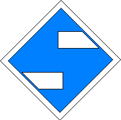

Signalbuch-Online
Signal El 3 – „Bügel ab“-Ankündesignal
Informationen und Erklärungen zum Ankündesignal für „Bügel ab“.
1
Bedeutung
Signal „Bügel ab“ erwarten.
2
Beschreibung
Zwei in der Höhe gegeneinander versetzte weiße Streifen.

3
Anwendung & Zusätze
Das Signal kündigt ein „Bügel ab“-Signal (El 4) an.
Örtliche Zusätze: Bei der DB Netz AG kann eine Ergänzung in den örtlichen Zusätzen bekanntgegeben sein.
4
Abstand zum Signal El 4
Das Signal befindet sich in der Regel im halben Abstand des Bremswegs der Strecke vor dem „Bügel ab“-Signal (El 4).
5
Signal El 3 wiederholt
Wenn Züge hinter dem Signal El 3 beginnen oder ihre Fahrt fortsetzen, ist ein zweites Signal El 3 aufgestellt.
Der Standort des zweiten Signals wird in der La bekannt gegeben.
Der Standort des zweiten Signals wird in der La bekannt gegeben.
6
Originalbilder